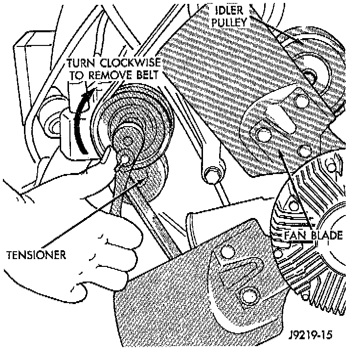
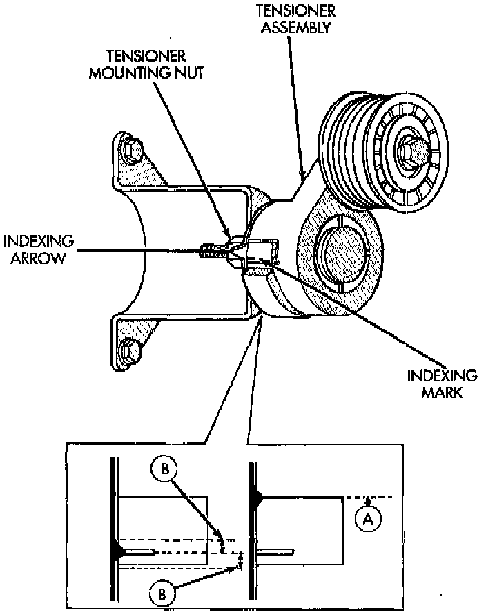

Drive Belt Tensioner: Service and Repair
NOTE: On 5.2/5.9L engines, the tensioner is equipped with an indexing arrow on back of tensioner and an indexing mark on tensioner housing. If a new belt is being installed, arrow must be within approximately 3 mm (1/8 inch) of indexing mark (point B-). Belt is considered new if it has been used 15 minutes or less.
If the above specification cannot be met, check for:
- The wrong belt being installed (incorrect, length/ width)
- Worn bearings on an engine accessory (TIC compressor, power steering pump, water pump, idler pulley or generator)
- A pulley on an engine accessory being loose
- Misalignment of an engine accessory
- Belt incorrectly routed.
NOTE: A used belt should be replaced if tensioner indexing arrow has moved to point-A. Tensioner travel stops at point-A.
REMOVAL

1. Remove accessory drive belt as follows: The drive belt is equipped with a spring loaded automatic belt tensioner. Relax tension from belt by rotating tensioner clockwise (as viewed from front). When all belt tension has been relaxed, remove accessory drive belt.
2. Disconnect wiring and secondary cable from ignition coil.
3. Remove ignition coil from coil mounting bracket (two bolts). Do not remove coil mounting bracket from cylinder head.

4. Remove tensioner assembly from mounting bracket (one nut).
WARNING: Because of high spring pressure, do not attempt to disassemble automatic tensioner. unit is serviced as an assembly (except for pulley).
5. Remove pulley bolt. Remove pulley from tensioner.
INSTALLATION
1. Install pulley and pulley bolt to tensioner. Tighten bolt to 61 Nm (45 ft. lbs.) torque.
2. Install tensioner assembly to mounting bracket. An indexing tab is located on back of tensioner. Align this tab to slot in mounting bracket. Tighten nut to 67 Nm (50 ft. lbs.) torque.
3. Connect all wiring to ignition coil.
4. Install coil to coil bracket. If nuts and bolts are used to secure coil to coil bracket, tighten to 11 Nm (100 inch lbs.) torque. If coil mounting bracket has been tapped for coil mounting bolts, tighten bolts to 5 Nm (50 inch lbs.) torque.
CAUTION: To prevent damage to coil case, coil mounting bolts must be torqued.
5. Install drive belt.
6. Check belt indexing marks.